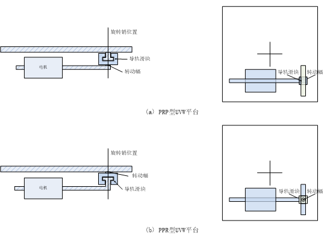
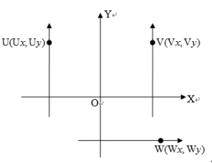
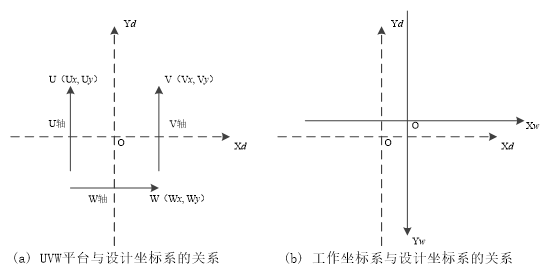

Platform UVW được sử dụng rộng rãi trong các giải pháp căn chỉnh thị giác nhờ đặc tính độ chính xác góc cao. Trong ứng dụng thực tế, quá trình hiệu chuẩn và căn chỉnh UVW thường cần chuyển tọa độ sang hệ tọa độ platform XYD để tính toán trước, sau đó chuyển kết quả tính toán trở lại hệ tọa độ UVW. Bộ chuyển đổi platform UVW là công cụ thực hiện chức năng chuyển đổi qua lại giữa tọa độ platform UVW và tọa độ platform XYD.
| Phân loại | Tên tham số | Mô tả tham số |
|---|---|---|
| Cửa sổ thuộc tính | Chế độ chuyển đổi | Bao gồm hai chế độ chuyển đổi tọa độ: UVW sang XYD và XYD sang UVW |
| Loại platform | Bao gồm hai loại platform UVW: loại PPR và loại PRP |
|
| Loại tham số platform | Chỉ thiết lập khi loại platform là PPR, có hai tùy chọn là tham số tọa độ vuông góc và tham số tọa độ cực, lần lượt có nghĩa là chuyển tọa độ UVW sang hệ tọa độ vuông góc và chuyển sang hệ tọa độ cực; khi loại platform là PRP, mặc định cố định là chuyển đổi theo hệ tọa độ vuông góc. |
|
| Tọa độ điểm nối trục U | Khi dùng tham số tọa độ vuông góc, là tọa độ điểm nối trục U | |
| Tọa độ điểm nối trục V | Khi dùng tham số tọa độ vuông góc, là tọa độ điểm nối trục V | |
| Tọa độ điểm nối trục W | Khi dùng tham số tọa độ vuông góc, là tọa độ điểm nối trục W | |
| Tọa độ tâm quay | Khi dùng tham số tọa độ vuông góc, là tọa độ tâm quay | |
| Góc điểm nối trục U | Khi dùng tham số tọa độ cực, là góc điểm nối trục U | |
| Góc điểm nối trục V | Khi dùng tham số tọa độ cực, là góc điểm nối trục V | |
| Góc điểm nối trục W | Khi dùng tham số tọa độ cực, là góc điểm nối trục W | |
| Bán kính đường tròn ngoại tiếp điểm nối | Khi dùng tham số tọa độ cực, là bán kính đường tròn ngoại tiếp của các điểm nối | |
| Hướng trục U | Bốn tùy chọn cùng hướng/ngược hướng với trục X/Y của hệ tọa độ thiết kế | |
| Hướng trục V | Bốn tùy chọn cùng hướng/ngược hướng với trục X/Y của hệ tọa độ thiết kế | |
| Hướng trục W | Bốn tùy chọn cùng hướng/ngược hướng với trục X/Y của hệ tọa độ thiết kế | |
| Hướng trục X của hệ tọa độ làm việc | Bốn tùy chọn cùng hướng/ngược hướng với trục X/Y của hệ tọa độ thiết kế | |
| Hướng trục Y của hệ tọa độ làm việc | Bốn tùy chọn cùng hướng/ngược hướng với trục X/Y của hệ tọa độ thiết kế | |
| Cửa sổ hình ảnh | Không có | Không có |
| Liên kết dữ liệu | Vị trí trục platform đầu vào | Vị trí trục platform đầu vào cần chuyển đổi thích ứng |
| Giao diện nâng cao | Không có | Không có |
| Phân loại | Tên tham số | Mô tả tham số |
|---|---|---|
| Cửa sổ giám sát | Vị trí trục platform đầu ra | Kết quả vị trí trục platform sau khi chuyển đổi |
| Kết quả thực thi | Hiển thị kết quả thực thi của công cụ, thực thi thành công hiển thị “OK”, thực thi thất bại hiển thị “NG”, giống với tham số kết quả thực thi trong cửa sổ giám sát. | |
| Thời gian thực thi | Thời gian thực thi | |
| Liên kết dữ liệu | Vị trí trục platform đầu ra | Kết quả vị trí trục platform sau khi chuyển đổi |
Hiện nay các platform UVW đã gặp có hai loại kết cấu, một loại là platform UVW 3-PRP được kết nối theo thứ tự vít me động cơ —— khớp quay —— con trượt ray dẫn hướng —— mặt bàn platform, tức là con trượt ray dẫn hướng cố định với mặt bàn platform, như trong Hình 1（a）; loại còn lại là platform UVW 3-PPR được kết nối theo thứ tự vít me động cơ —— con trượt ray dẫn hướng —— khớp quay —— mặt bàn platform, tức là khớp quay cố định với mặt bàn platform, trong đó, P(Prismatic joint) là khớp tịnh tiến, R(Revolute joint) là khớp quay, như trong Hình 1（b）. So sánh hai loại này, trong cùng hành trình, loại PRP có độ chính xác góc cao hơn, loại PPR có góc quay lớn hơn. Thuật toán chuyển đổi của hai kết cấu platform này có sự khác biệt.

Sơ đồ mô hình của hai platform được thể hiện như trong Hình 2.

Khi nhà sản xuất platform loại PPR cung cấp tham số platform, cách cung cấp khác với loại PRP, thông thường không cung cấp tọa độ chốt quay (góc) của ba trục, mà cung cấp góc của ba chốt quay và bán kính đến tâm platform dưới dạng tọa độ cực. Vì vậy có thuật toán chuyển đổi tọa độ cực cho platform UVW loại PPR.
Chuyển đổi UVW-XYθ thực chất là chuyển đổi giữa vị trí trục platform UVW và vị trí trong hệ tọa độ làm việc XWOYW. Quá trình chuyển đổi sử dụng hệ tọa độ thiết kế XdOYd dùng để định nghĩa tọa độ chốt quay của từng trục UVW, như trong Hình 3.

Khi thiết lập tham số, người dùng thường có tài liệu tham số quan hệ giữa platform UVW và hệ tọa độ thiết kế như trong Hình 3(a). Hướng trục có thể được thiết lập thông qua quan hệ hướng giữa từng trục của platform UVW và trục tương ứng của hệ tọa độ thiết kế trong Hình 3（a）. Tham số quan hệ giữa platform UVW và hệ tọa độ thiết kế có thể thực hiện chuyển đổi qua lại giữa vị trí trục UVW và tọa độ XYθ.
Trong ứng dụng thực tế, sẽ định nghĩa một hệ tọa độ làm việc, thường cùng hướng với hệ tọa độ ảnh. Trong điều kiện lý tưởng, gốc của hệ tọa độ làm việc trùng với gốc của hệ tọa độ thiết kế platform. Như hệ tọa độ XWOYW được thể hiện trong Hình 3-1（b）. Thông qua tham số quan hệ giữa hệ tọa độ làm việc và hệ tọa độ thiết kế, có thể thực hiện chuyển đổi qua lại giữa vị trí trong hệ tọa độ làm việc và vị trí trong hệ tọa độ thiết kế. Trên thực tế, tham số quan hệ giữa hệ tọa độ làm việc và hệ tọa độ thiết kế trong thuật toán chuyển đổi platform UVW chỉ ảnh hưởng đến dấu (hướng) của kết quả.
Không có
Tham khảo “\Samples\UVW平台适配器.gvp”.